pymibbrowser — Руководство пользователя
Qt-клиент SNMP MIB-браузера для Linux: опрос устройств, трапы, периодические поллы, наблюдения по порогам, визуализация пропускной способности, сценарии на языке SNMP-команд. Это руководство проведёт вас по каждой возможности в том порядке, в котором они обычно нужны инженеру сети.
01 Обзор
pymibbrowser — настольное приложение для сетевых
инженеров: опрос, графики, мониторинг и документирование
устройств по SNMP. В комплекте идут стандартные MIB (RFC 1213,
IF-MIB, HOST-RESOURCES-MIB, семейство SNMPv2, …); любой
дополнительный .mib / .my /
.txt подключается через Файл → Загрузить MIB.
Вендорские модули по умолчанию скрыты, включите их в
MIB → Модули MIB….
Интерфейс следует идеям iReasoning MIB Browser, но перестроен вокруг трёх вопросов, которые инженер задаёт себе каждый день: что устройство показывает прямо сейчас?, как оно меняется во времени? и не перешло ли что-то порог?
02 Быстрый старт
- Установите
snmpdна тестовую машину (или возьмите любой доступный SNMP-агент в сети). - Запустите
./run.sh. - В панели инструментов заполните Адрес, Сообщество, выберите версию SNMP.
- Введите OID (например
sysUpTime.0или.1.3.6.1.2.1.1.3.0) и нажмите Ctrl+Enter — или выберите узел в дереве слева и нажмите Выполнить ▶. - Результаты появятся в вкладке Результат; Walk добавляет по строке на каждый varbind.
03 Главное окно
Окно разделено на дерево MIB слева и панель вкладок с результатами справа. Разделитель можно двигать.
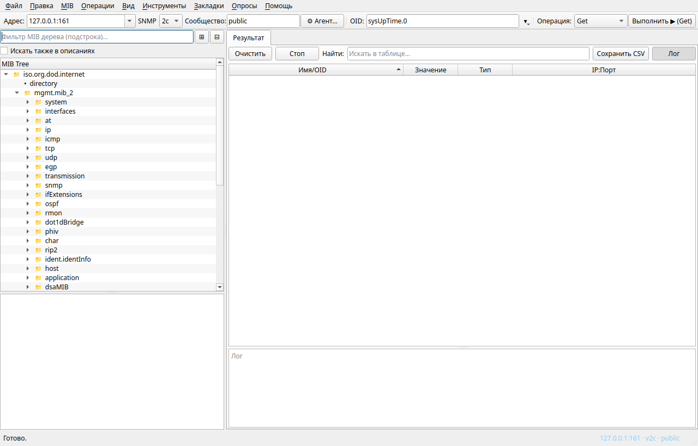
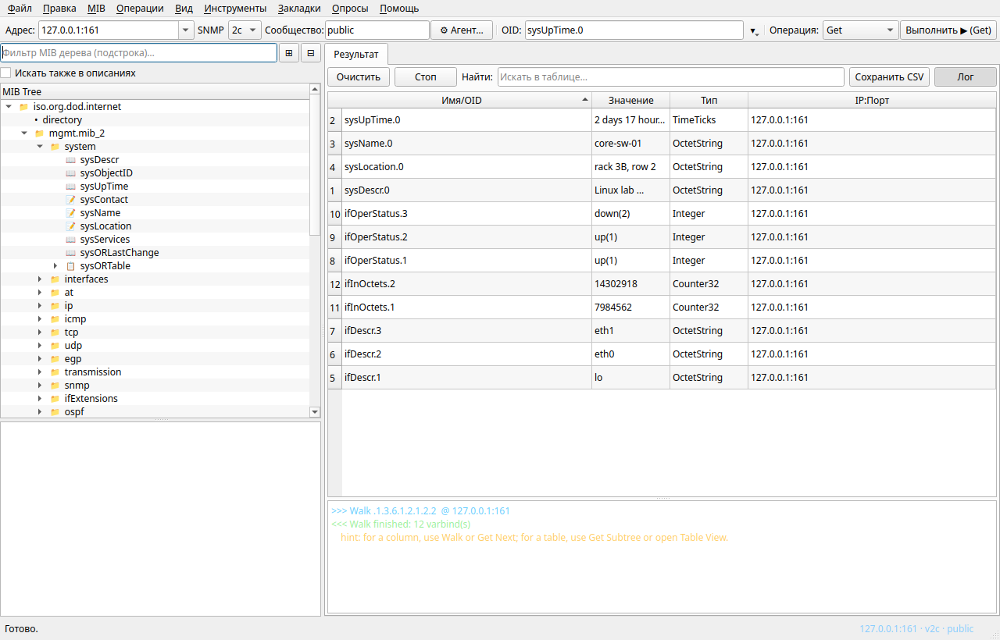
Walk .1.3.6.1.2.1.2.2: таблица
результата наполняется строками по мере прихода varbind-ов, под
ней — лог с подсказкой от приложения.05 Дерево MIB и фильтр
Цепочки одиночных организационных папок сжимаются в один
пунктирный узел: iso.org.dod.internet — это один
элемент, а не четыре. Таблицы, строки, скаляры, столбцы и
уведомления всегда остаются отдельными узлами, чтобы структура
SMI была видна.
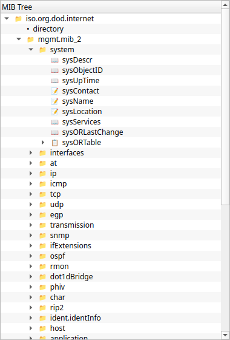
Фильтр
Поле Фильтр MIB-дерева принимает подстроку; через 250 мс после последнего нажатия дерево сворачивается, совпадения подсвечиваются и автораскрываются. Чекбокс Искать также в описаниях расширяет матч на DESCRIPTION — полезно найти «CPU» или «temperature», когда в именах узлов этого нет.
Ctrl+F фокусирует фильтр откуда угодно. Если курсор внутри правой панели, Ctrl+F вместо этого активирует фильтр результата; Ctrl+T всегда делает именно это.
06 Панель свойств
Клик по узлу дерева заполняет панель свойств: Name, OID, MIB, тип, синтаксис, доступ, статус, единицы измерения, индексы, enum значения, описание. Двойной клик не отправляет SNMP-запрос — только подставляет OID в панель инструментов и выставляет разумную операцию по умолчанию (GET для скаляра, Walk для колонки, Get Subtree для таблицы). Выполняйте руками через Ctrl+Enter или Go ▶.
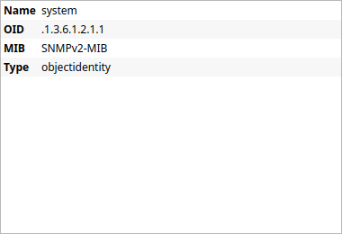
07 SNMP-операции
Правый клик по узлу дерева — контекстное меню с явным выбором GET / GET NEXT / WALK / SET / Table View / Graph / В закладки / Добавить в наблюдения…
.1.3.6.1)
покажет подтверждение с оценкой количества узлов — чтобы
случайно не загрузить 10 000 varbind-ов.
Операция по умолчанию
| Тип узла | Операция | Форма OID |
|---|---|---|
| Скаляр (sysName) | GET | добавляется .0 |
| Столбец (ifInOctets) | WALK | голый OID столбца |
| Таблица / строка | GET SUBTREE | голый OID |
| Уведомление | GET NEXT | — |
| Прочее | GET NEXT | голый OID |
08 Результаты и лог
Результаты падают во вкладку Результат. Столбцы: Имя/OID, Значение, Тип, IP:Порт. Сортировка на всех столбцах. При наведении на ячейку появляется tooltip с расшифровкой OID, модулем, синтаксисом и правами доступа.
Панель лога под таблицей выводит строки >>>
запрос / <<< ответ с подсказками
(«у этого OID нет скалярного инстанса — попробуйте
WALK»). Скрыть можно кнопкой Лог в
тулбаре вкладки; настройка сохраняется.
Контекстное меню строки
- Get / Get Next / Walk по OID строки
- Graph — открывает live-график (rate mode автоматически для счётчиков)
- Table View если OID принадлежит табличной области
- Copy OID / Copy Value
09 Табличный вид
Вид → Вид таблицы… превращает WALK концептуальной таблицы в обычную сетку: одна строка на инстанс, колонка на столбец MIB; плюс синтетическая колонка Index Value с суффиксом OID (удобно для ручного GET по конкретной строке). Кнопка Повернуть транспонирует — для узких таблиц удобнее.
10 Порты (Port View)
Инструменты → Порты… визуализирует ifTable
как сетку плиток: по одной на интерфейс. Каждая плитка
показывает индикатор up/down, бейдж с пропускной способностью и
тип интерфейса. Клик по плитке открывает График этого порта в
rate-режиме.
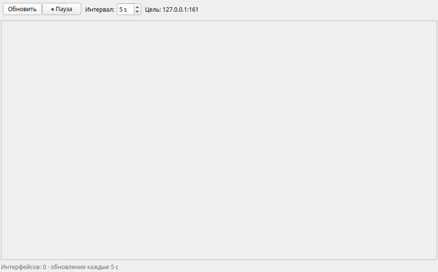
ifHCInOctets/ifHCOutOctets, иначе
32-битный ifInOctets переполняется каждые
несколько минут — и в плитке был бы ноль даже при трафике
гигабит в секунду.11 Графики
Выберите числовой OID и откройте Вид → График…. Вкладка опрашивает с настраиваемым интервалом, держит скользящее окно в 600 точек (меняется в Настройках) и рисует через pyqtgraph. Для счётчиков обязательно включайте Rate (delta) — иначе линия будет просто монотонно расти.
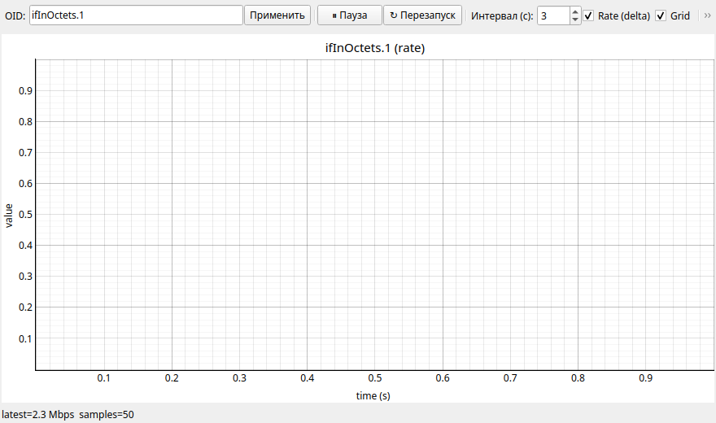
ifInOctets.1 в rate-режиме.Применение нового OID стирает текущую запись — если вы набрали минуты данных, приложение попросит подтверждение. Экспорт CSV сохраняет отсчёты в файл.
12 Закладки
Всё, что запускаете чаще двух раз — в закладку. Ctrl+D на текущем OID открывает форму:
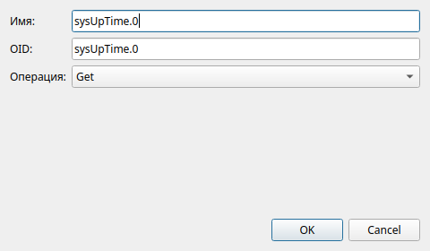
Закладки → Управление закладками… показывает таблицу Имя / OID / Операция с кнопками Edit / Delete / Go / Close. Кнопка Go запускает закладку прямо из диалога.
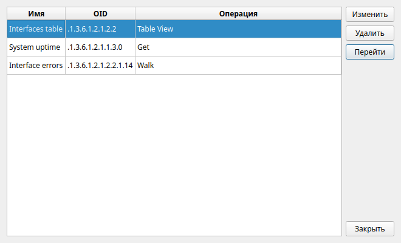
Shift+клик по закладке в меню загружает её в панель инструментов, но не запускает — удобно когда хочется перепроверить перед отправкой тяжёлой операции.
13 Опросы (Polls)
Опрос — это периодический GET фиксированного набора переменных по списку агентов. Используется для uptime-обзоров, dashboard-стиля статус-страниц, и всего, что иначе писали бы shell-скриптом.
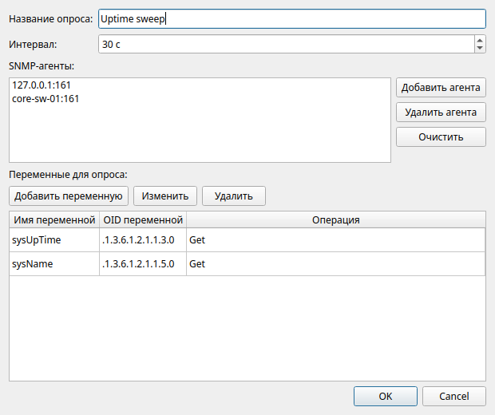
Запуск открывает вкладку, где строки — агенты, столбцы — переменные. Ячейки обновляются в реальном времени; ошибки отображаются красным.
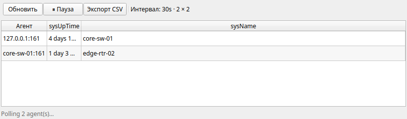
14 Наблюдения
Инструменты → Наблюдения… — живой dashboard предикатов над одним OID. У каждой строки свой OID, SNMP-операция и условие «Нормально, если результат <оп> <значение>». Зелёные строки — норма, красные — тревога, серые — сбор данных или ошибка.
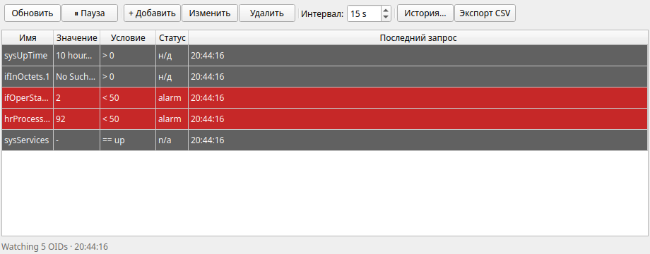
~/.local/share/pymibbrowser/watches_history.jsonl.
Кнопка История… в тулбаре вкладки открывает
фильтруемую таблицу переходов — отвечает на вопрос «когда
это начало мигать» без grep'а по логам.
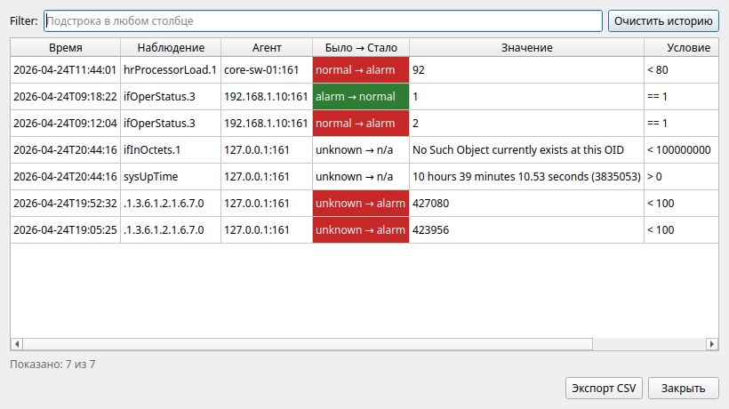
15 Снимок устройства
Инструменты → Снимок устройства… выполняет фиксированный
набор запросов к текущему агенту и раскладывает результат на три
блока: Основная информация (скаляры
sys*), Информация об интерфейсах
(фрагмент ifTable с цветным
ifOperStatus), Ресурсы системы
(hrSystemProcesses, hrMemorySize;
опускаются, если агент не публикует HOST-RESOURCES-MIB).
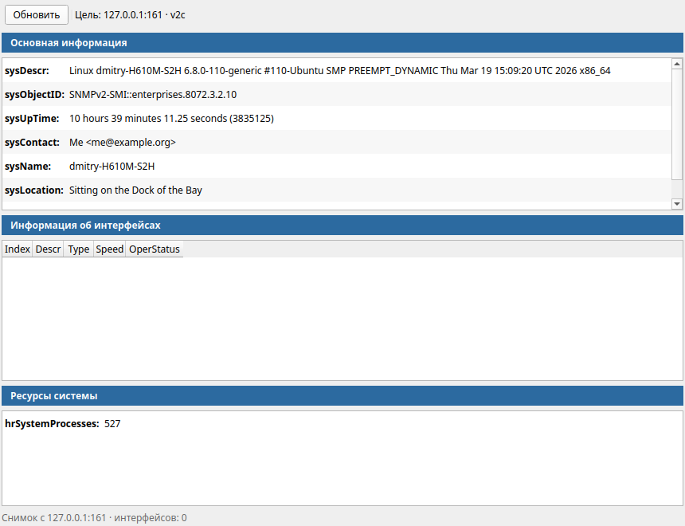
16 Сохранение walk в файл
Инструменты → Сохранить walk в файл… обходит поддерево и
пишет snmpwalk-совместимый .walk-файл. Его можно
открыть в Симуляторе агента как mock-устройство,
отправить коллеге или сравнить два снимка между собой.
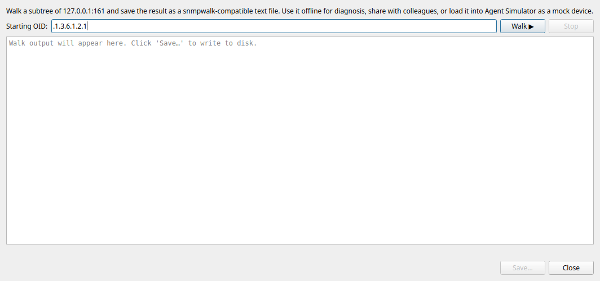
17 Сравнение устройств
Инструменты → Сравнить устройства… читает два источника
(каждый — живой агент или .walk-файл) и рисует
цветной diff: серый — одинаковые,
синий — только слева,
оранжевый — только справа,
красный — значение отличается.
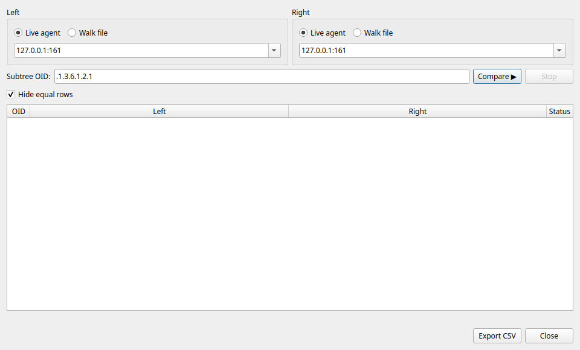
18 Ping / Traceroute / Discovery
Встроенные сетевые утилиты — используют системные бинари, root не требуется.
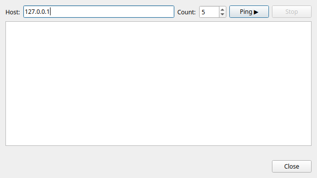
ping.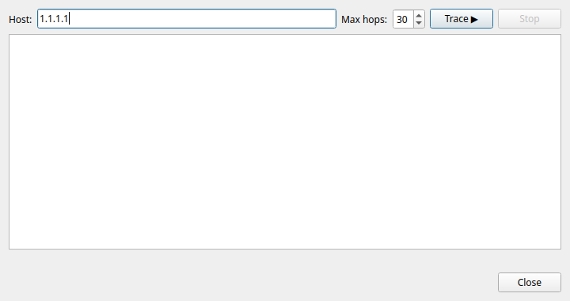
tracepath
(без root), fallback на traceroute -n.Обнаружение сети
Сканирует CIDR 64-потоковым ICMP-ping'ом и на отвечающих хостах
делает SNMP-GET по sysName / sysDescr с
текущими credentials. Отмечайте чекбоксами нужные строки и
нажимайте Добавить выбранные в агенты, чтобы massовo
засеять список сохранённых агентов.
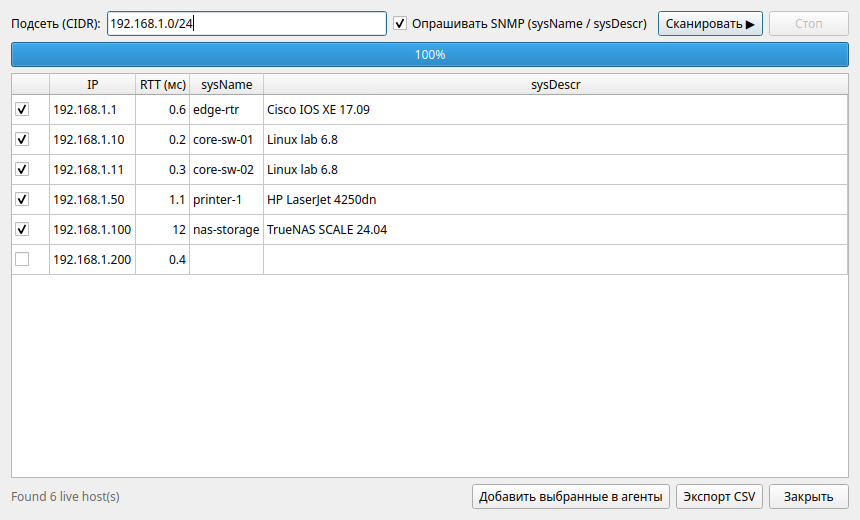
19 Приём трапов
Инструменты → Приём трапов… слушает UDP (порт по умолчанию 11162) и показывает разобранные трапы в сортируемой таблице: Время, Источник, Severity, OID трапа, Community, Сообщение.
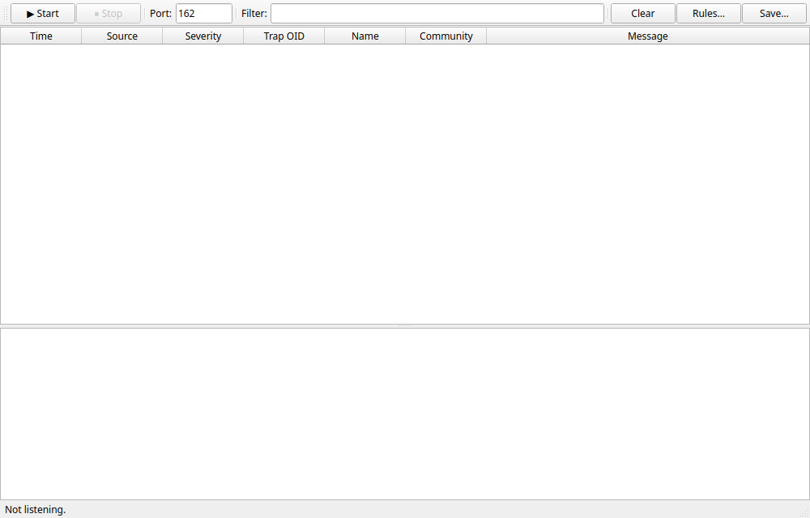
Правила
Каждое правило матчит по wildcard snmpTrapOID,
списку IP-источников и подстроке в payload; умеет
Установить severity, Установить сообщение,
Выполнить команду (с подстановкой
{oid} {src} {sev} {msg} {name}),
Проиграть звук или Игнорировать. Команды
запускаются через subprocess.Popen отсоединённо;
звуки — через paplay / aplay /
ffplay.
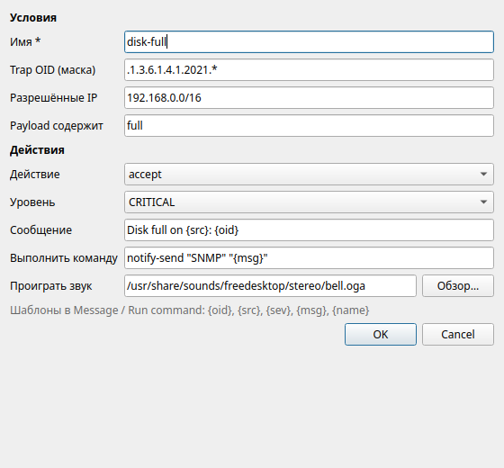
В детали трапа можно кликнуть по ссылке Показать сырой PDU — откроется hex-dump, полезно когда формат пакета подозрительный.
20 Отправка трапов
Инструменты → Отправка трапа… — форма для ручной отправки v1/v2c-трапов. Добавляйте var-bind'ы с типами; по кнопке Отправить пакет уходит на указанный приёмник. Удобно для проверки правил в собственном Trap Receiver.
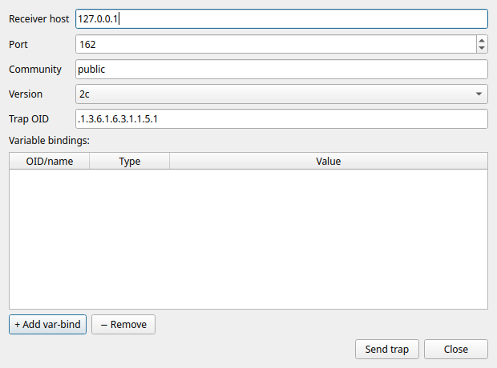
21 Симулятор агента
Инструменты → Симулятор агента… запускает SNMP-агент в
процессе приложения на выбранном порту. Без walk-файла отвечает
дефолтами; укажите .walk из
Сохранить walk — будет проигрывать это устройство
байт-в-байт.
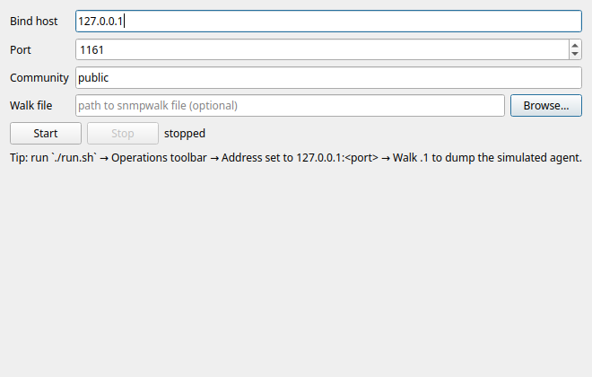
Совет: запустите две копии симулятора на разных портах — и отрепетируйте Сравнение устройств без реального железа.
22 Запуск скриптов
Инструменты → Запустить скрипт… — редактор небольших
SNMP-сценариев. Одна команда на строку, комментарии с
#.
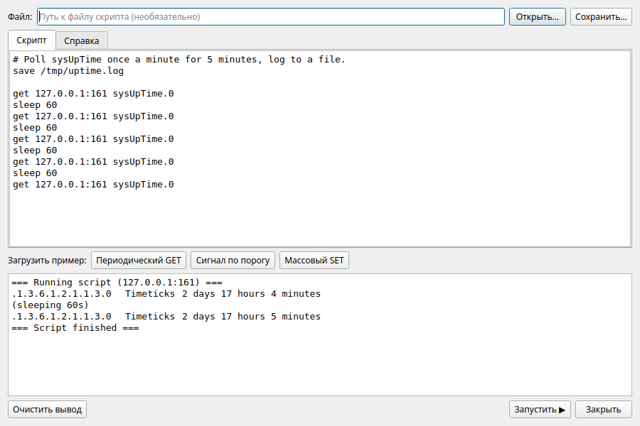
Справочник команд
| Команда | Что делает |
|---|---|
get <host[:port]> <oid> [oid…] |
SNMP GET |
getnext <host[:port]> <oid> … |
GET-NEXT |
set <host> <oid> <type> <value> … |
SET (типы: i u t a o s c g x) |
sleep <секунды> |
прерываемая пауза |
save <путь> |
перенаправить результат в файл |
if $ <op> <val> <action> [arg] |
условие над последним результатом; действия:
sound, email ADDR,
sleep N |
Ctrl+Enter — запустить; worker стримит
output в панель ниже. Закрытие диалога отменяет скрипт на
следующей 100 мс-проверке — длинный sleep
больше не блокирует закрытие.
23 Агенты
Список сохранённых агентов — Инструменты → Агенты…. Добавление / редактирование / дубликат / удаление — всё через единый диалог AgentDialog (включая поля SNMPv3 USM).
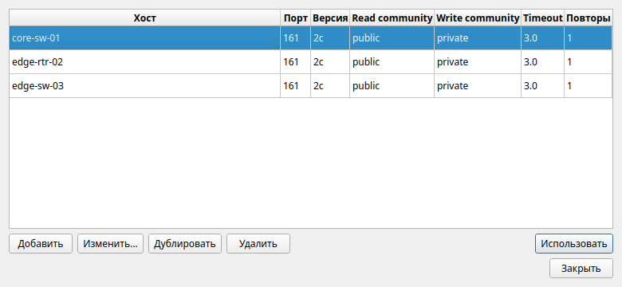
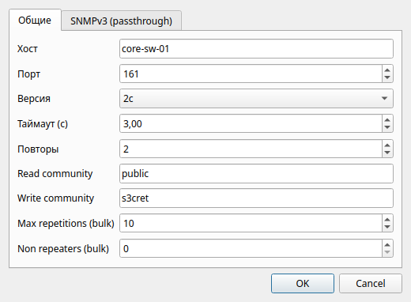
Быстрое переключение: Ctrl+1…9 меняет активного агента на N-го из списка.
24 Настройки
Всё, что сохраняется — здесь. При наведении на поле или его подпись внизу появляется подсказка — не нужно помнить наизусть, что такое «GETBULK max-repetitions».
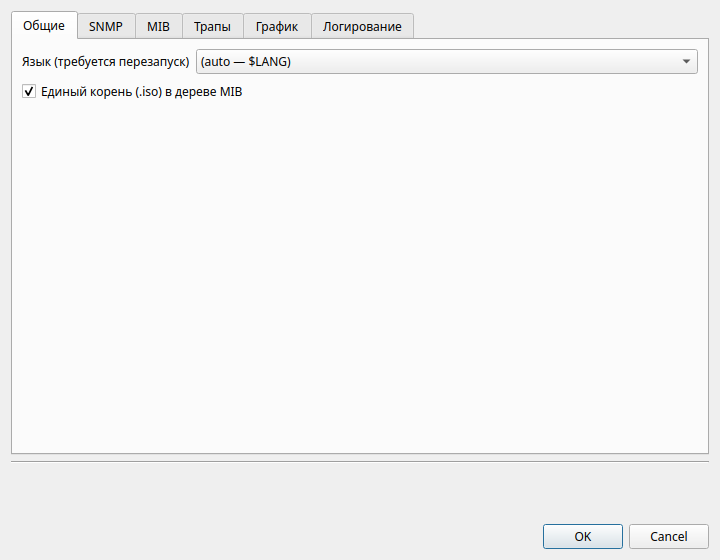
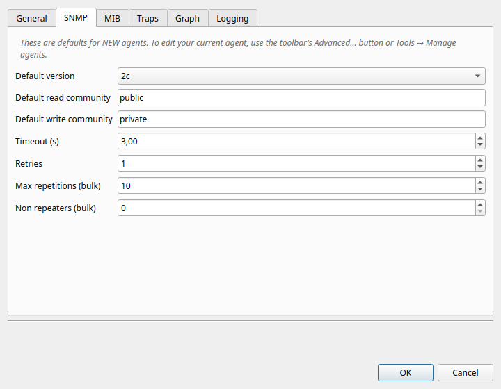
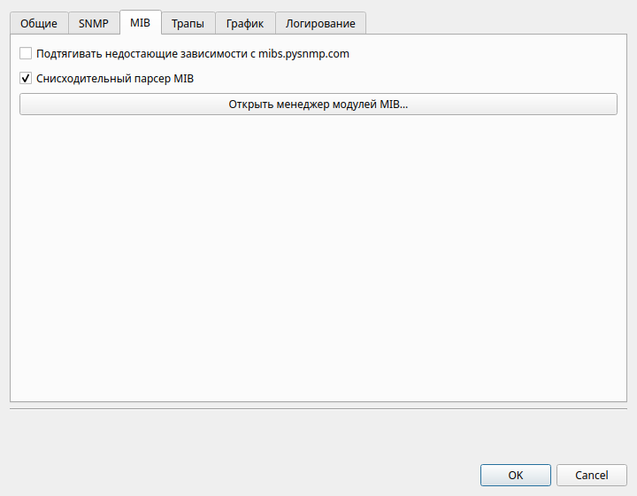
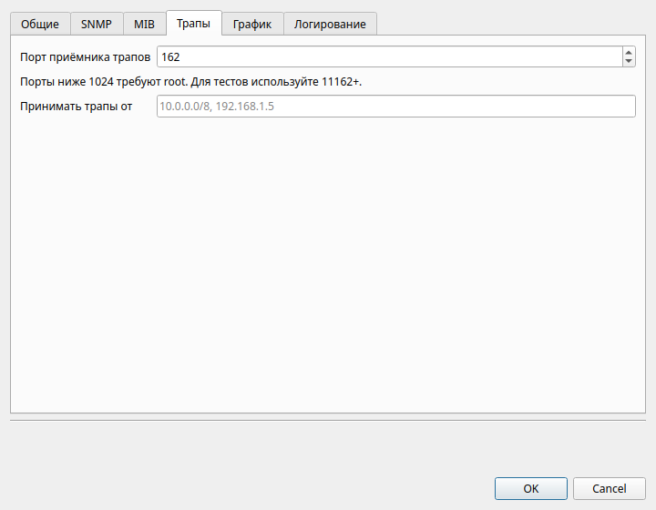
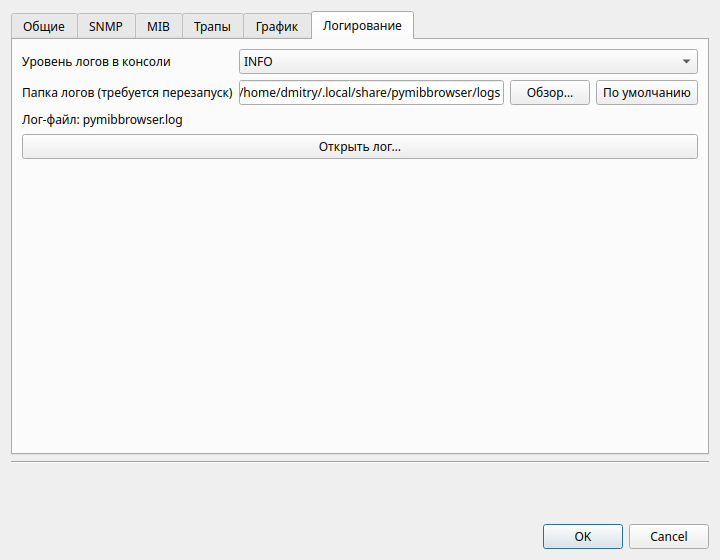
Модули MIB
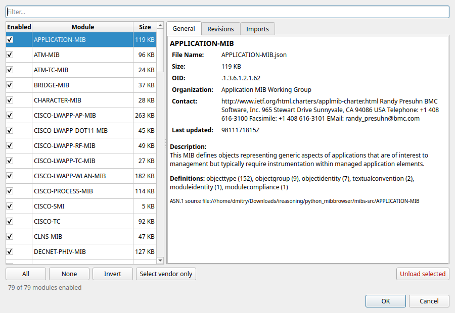
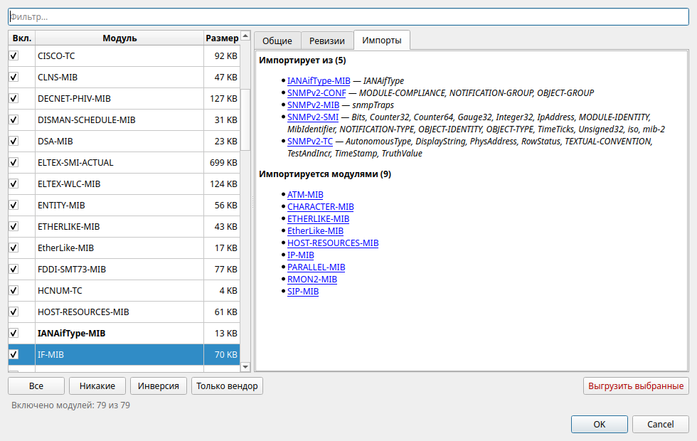
25 Горячие клавиши
| Клавиша | Действие |
|---|---|
| Ctrl+L | Загрузить MIB… |
| Ctrl+, | Настройки… |
| Ctrl+F | Найти — в активной панели |
| Ctrl+T | Найти в результатах |
| Ctrl+S | Сохранить результаты в CSV |
| Ctrl+Q | Выход |
| Ctrl+Return | Запустить текущую операцию |
| F5 | Обновить активную вкладку (Result / Table / Graph / Watches — по контексту) |
| Escape | Остановить текущую операцию |
| Ctrl+D | Добавить текущий OID в закладки |
| Ctrl+1..9 | Переключиться на сохранённого агента №N |
Помощь → Горячие клавиши открывает ту же таблицу прямо в приложении.
26 Решение проблем
«Нет ответа от агента»
- Запущен ли snmpd?
systemctl status snmpd - Совпадают ли community / версия с теми, что принимает агент?
- Доступен ли порт? Инструменты → Ping проверит IP,
но сам SNMP может быть фильтрован — попробуйте
nc -u host 161.
Port View показывает 0 bps на явно загруженном VPN-туннеле
32-битный ifInOctets переполняется каждые несколько
минут на активном tun-интерфейсе. Приложение сперва пробует
64-битные ifHCInOctets/ifHCOutOctets; если
агент не публикует ifXTable для tun-интерфейсов — на
плитке видно pre-overflow значение. В tooltip плитки написано,
какой источник выиграл.
«Не удалось разобрать трап»
Откройте деталь трапа и нажмите Показать сырой PDU — покажется hex-dump. Приложите его к issue вместе с моделью устройства и версией прошивки.
Где логи
Полный DEBUG-лог пишется в
~/.local/share/pymibbrowser/logs/pymibbrowser.log
(ротация 1 МБ × 5 бэкапов). Папку можно переопределить в
Настройки → Логирование.
Нашли баг или хотите предложить фичу — github.com/Gehnmart/python_mibbrowser/issues.